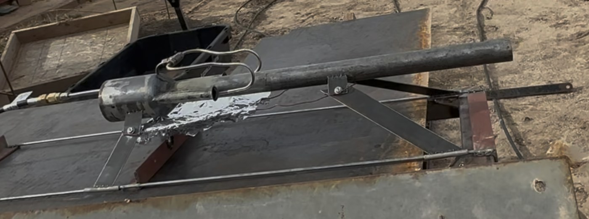
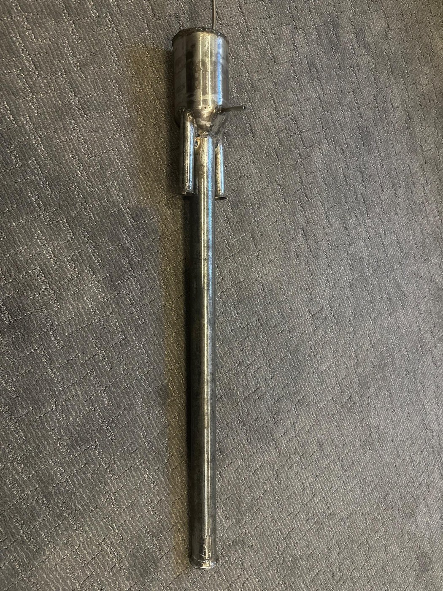
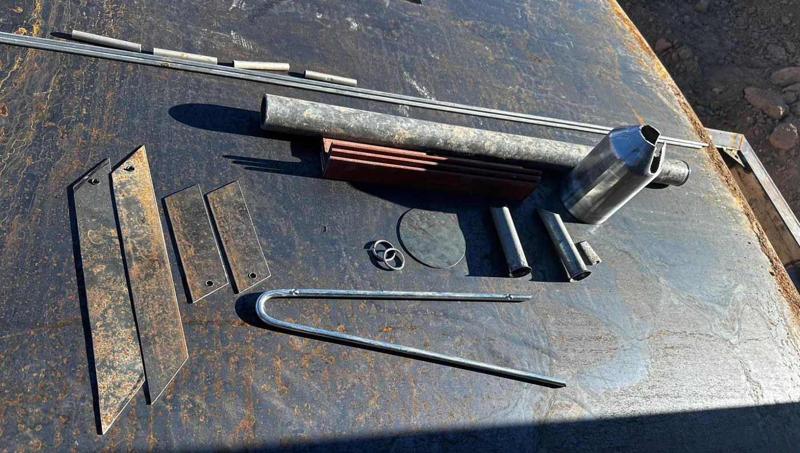

Valveless Pulse Jet


- This project was the beginning of my serious interest in aerospace and propulsion. I had wanted to build a working jet engine for a while and decided to start with something a little easier to manufacture and safer to test.
- I built and tested a small pulse jet in my garage that ran on propane.
- After weeks of research and design, I built it and started testing. It worked on the first try, but not as well as I expected. More testing, setup changes, and research showed that an engine this size usually will not start or produce much thrust. I was disappointed not to have learned that before building it. Getting it running anyway showed me I can do hard things and reach a goal.
- The project sharpened problem solving and prepared me for harder work. You cannot plan for everything when you are pushing into something new. I learned how to adapt and keep going.